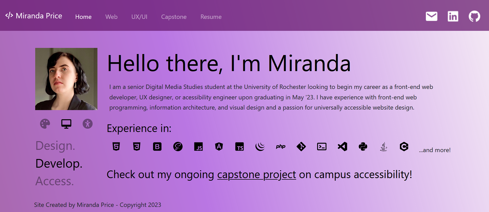

Site builders like Wix and Squarespace help anyone create a website, but they allow too much style customization that let non-designers make poorly designed sites.
The site gives non-designers a quiz about what kind of site they are making and gives them a style guide of five colors, two fonts, and three button styles. The results page tells users what a style guide is, how to incorporate their results into a Wix site, and why the design choices work for their site.
I first created a concept map that determine what influences my own design decisions. I used these influences to create questions about the site's content, interacitivy, and mood/feel. These questions were prioritized to determine the final decision flow.
Working with the questions and original concept map, I created decision flows for color choice, typography choice, and button design. These decision flows were combined to make the site's algorithm.
Landing page
Quiz form page
Results page
The site was developed using JavaScript to make it interactive and handle the algorithm's logic. The site is a single page application created without a JavaScript framework. Styling was done using the Bootstrap framework.
The color palette generation was the first feature tested, using end results not quiz questions. Next the base of the site and the form was built before implementing the algorithm. Once the site returned the expected results, the results page was built. The site was then changed to a single page application and context pop-ups was added to the results page.
The first step in my design process was deciding the structure of the site. For the site's structure, I wanted to base the layout and content organization off of a real world example that works best for my work.
The next step in my design process was to come up with a basic concept for the site, such as the visual design, the navigation, and the order of information.
The next step in the design process was to decide how to split my portfolio into subpages and decide what content goes on each page. After deciding what content should be included, I organized the content based on importance and user expectations.
The next step in my design process is creating a rough sketch what each page should look like before adding the content.
I often adjust my layout plans once I begin to write content. When adding content to the home and about pages, I noticed that there were so many elements in common that they were redundant, so I combined the two. I also decided to adapt the navbar to include my contact information on all pages, instead of only on a few.
Original layout sketches for the home, work, resume, about, and contact pages.
Layout redesign to accommodate changes in content and organization.
I wanted my site's navigation to be simple to use. The main navigation bar is fixed to the top to be visible at all times. I added a dropdown menu for my work to make the navbar less crowded. Work pages have jump navigation sections for projects with multiple sections to let users easily parse through the information.
Sketch for original navbar with dropdown menu
The updated navbar is split into two parts: the site pages to the left and the contact links to the right. I added the contact links to make sure that information is visible at all times. I removed the About Me link after removing the corresponding page. I also decided to remove the dropdown menu for my work after removing the 3D Graphics section because I thought a dropdown would be unnecessary for two links.
Navbar redesign to accommodate change in content and orgainzation
I styled the site to match my resume's style as closely as possible, to create unity and consistency. I used the same color palette and modeled my header styles after my resume.
The site was styled using Bootstrap as a starting point. I used an override stylesheet to add on to the styling created by the framework to carry out my design vision.
The Resume page with no styling, with Bootstrap styling, and with Bootstrap and custom styling
This was the first iteration of the site, before it was peer-reviewed and revised. The main focus of the prototype was layout, navigation, and content. Other elements, like margin and form functionality, were not as important for the very first run.
The site was originally published through GitHub, before being moved to a host that allowed for more functionality.
Screenshots of all five pages from the prototype site. Full prototype available here.
Confirmation page shown when the email form is completed
Redesigned landing page with updated bio
A redesign of the internal Atlas global compliance management system used by the technical writers when writing product guides. The internal site holds the different versions and metadata for each warning and other types of compliance required in product publications in various countries.
Updates included improved jsTree searching for products and compliance items, streamlined compliance assignment and metadata edits, more minimalist visual design and UI, and assiging responsibility for compliance items from those in the global compliance department.
In the interest of confidentiality, I have only included wireframes of the site, since screenshots of the site could contain non-public information.